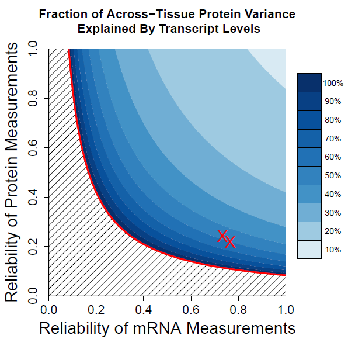

Supporting Information
Post-transcriptional regulation across human tissues
PLoS Comp Bio
Article
GitHub Code
PDF
Highlights The Scientist Twitter Moment
Preprints bioRxiv PDF
arXiv PDF
Highlights The Scientist Twitter Moment
Preprints bioRxiv PDF
arXiv PDF
Summary
Transcriptional and post-transcriptional regulation shape tissue-type-specific proteomes, but their relative contributions remain contested. Estimates of the factors determining protein levels in human tissues do not distinguish between (i) the factors determining the variability between the abundances of different proteins, i.e., mean-level-variability and, (ii) the factors determining the physiological variability of the same protein across different tissue types, i.e., across-tissue variability. We sought to estimate the contribution of transcript levels to these two orthogonal sources of variability, and found that scaled mRNA levels can account for most of the mean-level-variability but not necessarily for across-tissues variability. The reliable quantification of the latter estimate is limited by substantial measurement noise. However, protein-to-mRNA ratios exhibit substantial across-tissues variability that is functionally concerted and reproducible across different datasets, suggesting extensive post-transcriptional regulation. These results caution against estimating protein fold-changes from mRNA fold-changes between different cell-types, and highlight the contribution of post-transcriptional regulation to shaping tissue-type-specific proteomes.

Download Data
Franks A., Airoldi E., Slavov N.✉ (2017)Post-transcriptional regulation across human tissues
PLoS Comput Biol, 13(5): e1005535 PDF | Twitter | Highlight
DOI: 10.1371/journal.pcbi.1005535
Towards quantifying post-transcriptional regulation in single cells